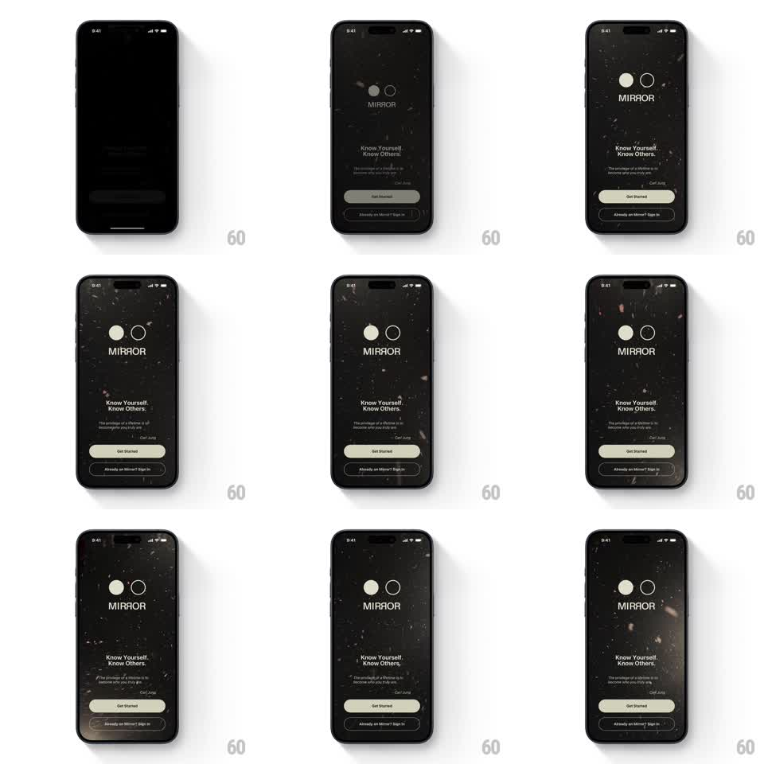

Media
Frame-by-frame

Rebuild this animation 1:1: Mirror's onboarding intro - a slow-zooming black particle field behind the two-circle MIRROR mark, with the headline, Jung quote, and buttons fading in one by one.

Rebuild this animation 1:1: Mirror's onboarding intro - a slow-zooming black particle field behind the two-circle MIRROR mark, with the headline, Jung quote, and buttons fading in one by one.
## Integration
Integration: stack-agnostic spec - springs given as stiffness/damping, timed motions as duration + curve; map every value to your framework and animation library of choice.
## Scene
Mirror intro, pure black: a field of faint drifting specks (dust, tiny shards, occasional soft glints) filling the whole screen. Upper third: the two-circle mark (one filled cream circle, one cream outline, overlapping) above "MIRROR". Lower half: "Know Yourself. Know Others.", the Carl Jung quote with attribution, a cream "Get Started" button and "Already on Mirror? Sign in" ghost button.
## Motion spec
Pattern: slow-zoom particle atmosphere with staggered typographic fade-in.
- The particle field slow-zooms continuously (scale 1 -> 1.08 over 30s, looping with an imperceptible reset); individual specks drift on their own vectors (2-6px/s) with a few catching light (opacity pulses 0.1 -> 0.5 -> 0.1 over ~3s, random phases).
- Content fades in from black in a strict sequence: the two-circle mark first (1s fade, 300ms in), "MIRROR" 200ms later (800ms), then the headline line by line (600ms each, 150ms apart), then the quote block (600ms), then Get Started (500ms) and Sign In (400ms, 100ms apart).
- Nothing slides - every entrance is a pure fade with at most a 6px rise.
- After the sequence completes, the field keeps breathing forever; the buttons idle with no pulse.
## Calibration
- The palette is monochrome: black, cream, and grey specks only.
- The whole intro takes ~3.5s to fully reveal and must feel unhurried.
## Reduced motion
Static particle field (single frame); all content fades in together over 600ms.
## Don't miss
- The two circles of the mark must overlap exactly as shown - one filled, one outline.
- The quote attribution ("Carl Jung") is part of the fade sequence, not a separate step.